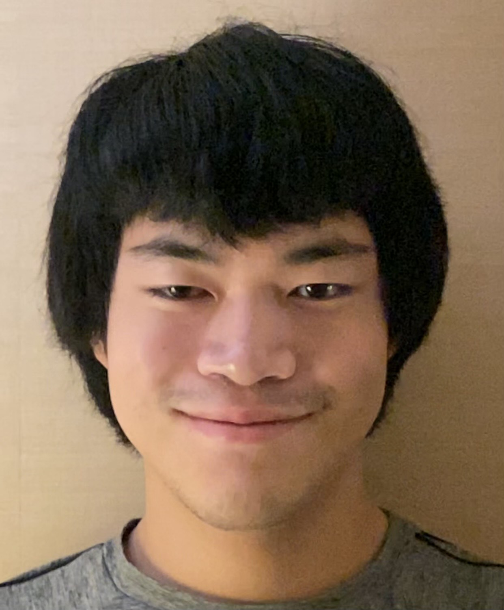

About Us

- About Austin Tsai
- I'm a sophomore majoring in Computer Science and Information Science
- My Interests
- I enjoy playing video games, reading webnovels, and playing/listening to music. I also enjoy programming in my free time, such as competitive programming.
- Why LIS 500
- Besides this class being a GenEd, it is also related to a field I’m interested in and allows me to practice more of my web design skills, something I’ve been working on recently. I’m also interested in how I can connect intersectionality in the way I design the websites and applications I build to help create a more equitable world.
- My Favorite "Tech" Thing
- Video games, as I spend much of my free time playing them, enjoy playing them with friends, and consume a lot of the content produced from them.

- About Sophia Heuss
- I'm a Computer Science and Information Science major with a certificate in Digital Studies
- My Interests
- I enjoy thrifting, traveling, and listening to music
- Why LIS 500
- I wanted to take an online course that satisfies my iSci major, and this one looked interesting!
- My Favorite "Tech" Thing
- My headphones! I love being in my own bubble of noise.

- About Claire Wieboldt
- I'm a senior Information Science major and incoming Library Science grad student.
- My Interests
- My career interests include public librarianship, and exploring the intersection of librarianship and technology. In my free time, I enjoy reading, gardening, running, and plenty of NYT word games.
- Why LIS 500
- In addition to this course fulfilling a major requirement, as well as counting towards my graduate degree, I am interested in learning ways that technology can be made more inclusive. This is also relevant to my career interest in public librarianship, since it is important that the library provides the public with equitable technologies.
- My Favorite "Tech" Thing
- My favorite technology is my smartphone, since it allows me to communicate with others, complete school and work tasks on the go, and access endless entertainment from a convenient device.